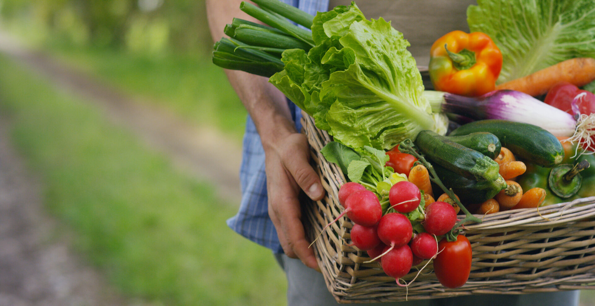

AgroMart

O AgroMart nasceu para transformar a forma como nos relacionamos com a agricultura familiar. Criado durante um Hackathon na UnB – FGA em 2020, no auge da pandemia, o projeto surgiu de um desafio simples e poderoso: aproximar agricultores e consumidores em um momento em que a conexão era mais necessária do que nunca.
Mais do que uma solução tecnológica, o AgroMart é um movimento. Uma plataforma que coloca o pequeno agricultor no centro, dando visibilidade à sua produção e garantindo que cada colheita encontre destino certo. Ao mesmo tempo, abre caminho para que consumidores descubram alimentos frescos, saudáveis e de qualidade, vindos direto de quem planta.
Inspirado no modelo de CSA (Community Supported Agriculture), o AgroMart fortalece comunidades, cria laços de confiança e promove uma economia mais justa e sustentável. É sobre reduzir distâncias, valorizar o que é local e construir uma rede onde todos ganham: o agricultor que escoa sua produção, o consumidor que encontra comida de verdade, e a sociedade que se beneficia de uma agricultura mais próxima e humana.
Conheça o que é uma CSA
As Comunidades que Sustentam a Agricultura (CSA) aproximam consumidores e agricultores por meio de uma parceria de confiança, transparência e apoio mútuo.
-
Comunidade CSA
Parceria transforma consumidores em coagricultores.

Acessar notícia -
Transparência e Origem
Produtos de origem conhecida e relação direta com quem produz.
Ler mais -
Economia Local
CSA é um caminho que proporciona mais sustentabilidade.

Saiba mais
Explore o AgroMart
-
Aplicativo AgroMart (Mobile)
Aplicativo Android/iOS integrado à API AgroMart.
Ver Repositório -
Plataforma AgroMart (Web)
Interface Web do AgroMart para consumidores e produtores.
Ver Repositório